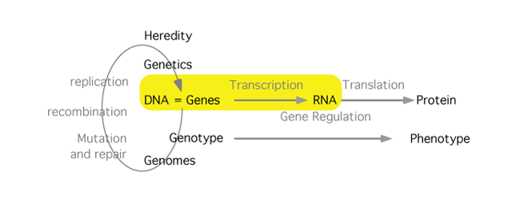

RNA Synthesis-Transcription

The flow of information from genotype, the nucleotide sequence in DNA encoding a functional product, begins and often ends with the process of transcribing a copy of this information from DNA into RNA. The basics of this process are the same in prokaryotes and eukaryotes, but there are differences in the details. Start with the prokaryotes and then move to the eukaryotes. Notice the differences and think about the relationship between these and the differing organism complexities.
Learning resources
- Study Guide
- MBoC(6th ed) Chapter 6: From DNA to RNA
- Cooper Ch6, RNA Synthesis and Processing, pgs 231-236, 239-244. [not available on this site]
- Narration: the basics
- Narration: Initiation in Eukaryotes
- Narration: Eukaryotic mRNA processing
- RNA polymerase in action [not available on this site]
- Eukaryotic PolII [not available on this site]
- TBP - part of TFIID of Eukaryotic PolII [not available on this site]
- Eukaryotic RNA splicing [not available on this site]
10/10/21